Air pollution, meteorological conditions and respiratory infections in Baix Lloblegat. A 14-year spatiotemporal analysis.
The objective of this research project are:
- Yingqing & Eli are studing all data from Pallejà that is a city in Baix Lloblegat county. In this county we are using data from Air Pollution Prevention and Monitoring Network(XPVCA in catalan) corresponding to hourly data, month data and weekday data of air pollutants from year 2011 to 2025. Data included: nitrogen oxide(NO), nitrogen dioxide(NO2), nitrogen oxides(NOX) and sulphur dioxide(SO2)
- Nitrogen dioxide (NO2): The annual legal limit was not exceeded during the analysed period (0 out of 15 years). No days or hours with concentrations above the legal thresholds were recorded.
- Sulphur dioxide (SO2): The annual limit was also not exceeded in any of the analysed years (0 out of 15). No days or hours above the legal limits were detected.
- Between 1991 and 2026, a total of 49 hourly exceedances of NO2 above 200 µg/m³ were recorded at the monitoring station.
- European air quality legislation allows up to 18 hourly exceedances per year above this threshold. In 2025, the station registered 0 hours above 200 µg/m³, meaning that air quality remained within the legal limits that year.
- The following calendars illustrate the daily average concentration of nitrogen oxide (NO) and nitrogen dioxide (NO₂) measured in Pallejà during the year 2025. Each small calendar represents one month, and each cell corresponds to a day of the month. The color scale indicates pollution intensity, where lighter yellow tones represent lower concentrations and darker orange or red tones represent higher pollution levels.
- The NO calendar shows that most days in 2025 present low to moderate concentrations, with occasional peaks scattered throughout the year. Nitrogen oxide is mainly produced by traffic emissions and combustion processes, and its levels vary depending on daily human activity and meteorological conditions.
- The NO₂ calendar displays a more consistent pattern of moderate concentrations throughout the year, with several days showing higher levels compared with NO. This pollutant is partly formed through atmospheric reactions involving nitrogen oxides, and its levels are influenced by traffic emissions and atmospheric dispersion conditions.
- Together, the two calendars show how air pollution varies day by day throughout the year. These temporal patterns help us understand when pollution levels increase and how they may interact with meteorological conditions and respiratory infections analysed in this study.
-
Meteorological data
Meteorological data is available from Meteocat XEMA (Meteorological data server of Catalonia) , so we chose the nearest meteorological station that is Vallirana. The data structure is based on semi-hourly data that is, data every 30 minutes from 2009. Data included: temperature, relative humidity, pressure, wind direction, wind speed, solar irradiance - The meteorological dataset obtained from the XEMA Meteocat station in Vallirana contains several atmospheric variables recorded at semi-hourly intervals. However, the variables corresponding to temperature (X30) and relative humidity (X31) contain missing values for the analysed period and were therefore excluded from the descriptive analysis.
- Consequently, the exploratory analysis focuses on the remaining available variables: atmospheric pressure (X32), wind direction (X33), wind speed (X34) and solar irradiance (X36).
- The figure shows the temporal evolution of atmospheric pressure, wind direction, wind speed, and solar irradiance from 2009 to 2025 at Vallirana station. Each variable is displayed in a separate panel with distinct colors. These meteorological factors influence the dispersion and transformation of air pollutants in the region.
-
Respiratory infection data
Respiratory infection data are collected from Catalonia Information System for Infection Surveillance (SIVIC) using data from region 75, that is Barcelona Metropolitan Sud region 261 is the identificator of the Primary care centre from Vallirana. - Between 2011 and 2026, Vallirana Primary Care Centre reported 916 cases of bronchiolitis, with an average of 1.3 cases per day. Seasonal peaks are evident in the graph, particularly during winter, which aligns with the usual timing of bronchiolitis outbreaks.
- In 2015, a total of 79 bronchiolitis cases were recorded, averaging 1.4 cases daily. The highest daily count occurred on April 7, with 8 cases. The graph illustrates fluctuations across the year, reflecting variable incidence rates of bronchiolitis
- For infants (age 0), there were 556 cases from October 10, 2011, to February 5, 2026, with an average of 1.2 daily cases. Peaks typically occur in winter, consistent with bronchiolitis primarily affecting very young children.
- During the same period, 440 cases were recorded in females and 506 in males, averaging about 1.1 cases per day for both. The data shows slightly higher incidence in males, while the overall trends for both sexes remain similar.
- Between February 15, 2020, and January 29, 2026, the Vallirana Primary Care Centre recorded 10,529 COVID-19 cases, with an average of 7.4 daily cases. Several peaks in the graph reflect multiple waves of infection during and after the pandemic.
- The Vallirana Primary Care Centre recorded 1,702 COVID-19 cases in 2022, averaging 6.5 cases per day. The graph highlights distinct peaks, indicating periods of intensified transmission, likely corresponding to one of the major COVID-19 waves that year. These peaks suggest that infection rates were not constant but clustered around specific times, reflecting the broader epidemiological trends seen throughout 2022.
- From March 11, 2020, to October 13, 2025, the 45–49 age group had 1,130 cases, averaging 2.2 daily cases. Peaks in this group follow the general trends seen across all ages, highlighting periods of higher transmission.
- During the period from January 28, 2020, to January 19, 2026, the Vallirana Primary Care Centre recorded 5,781 COVID-19 cases in females. The average daily cases for this group were 4.8. The graph shows distinct peaks, reflecting periods of higher transmission that correspond to major COVID-19 waves during this timeframe. This indicates that female patients experienced significant fluctuations in case numbers, mirroring the broader epidemic trends observed across all sexes and age groups.
- Over the same period, males also experienced 5,781 cases (this appears to match the female total in your original text), with 4.8 cases per day on average, and the graph shows comparable peaks to females, reflecting similar epidemic trends.
- From October 3, 2011, to February 5, 2026, 5,482 influenza cases were recorded, averaging 3.4 cases per day. The graph highlights seasonal peaks typical of annual flu outbreaks.
- During January 2 to December 31, 2025, the Vallirana Primary Care Centre recorded 1,070 influenza cases across all age groups and sexes. The average daily cases were 4.8, reflecting a notably active flu year. The graph shows distinct peaks, indicating periods of higher transmission and confirming that 2025 was the year with the most influenza cases in the recorded timeframe.
- From November 24, 2011, to February 5, 2026, the 35–39 age group recorded 597 cases, with average daily cases lower than the total population. Peaks in the graph reflect the seasonal flu waves most affecting this age group.
- During the period from October 10, 2011, to February 5, 2026, the Vallirana Primary Care Centre recorded 2,814 influenza cases in women, with an average of 2.4 daily cases. The data shows clear seasonal peaks, reflecting the typical periods of higher transmission for influenza. This indicates that women consistently experienced fluctuations in case numbers following the cyclical pattern of flu seasons over the years.
- During the same period, males recorded 2,668 cases, averaging 2.3 daily cases. The peaks follow a similar seasonal pattern to females, showing comparable trends between sexes.
1. Air Quality Analysis in Pallejà (2011–2025)
1.1 Automatic conclusions based on official data
This analysis uses official air quality data from the Air Pollution Prevention and Monitoring Network (XVPCA) of Catalonia. The dataset covers the period from 2011 to 2025 and includes measurements of several atmospheric pollutants recorded at the Pallejà monitoring station.
1.2 Results by pollutant
1.3 General conclusion for Pallejà
Air pollution patterns (NO and NO₂) in 2025
Nitrogen Oxide (NO)
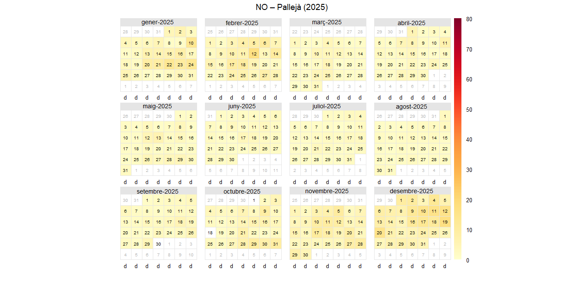
Nitrogen Dioxide (NO₂)

Interpretation
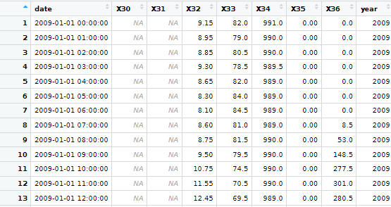
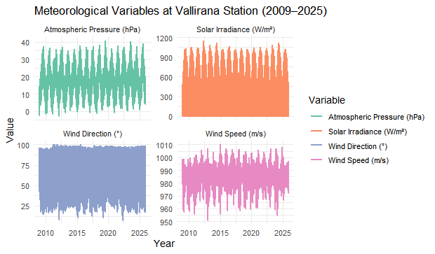
BRONCHIOLITIS
All
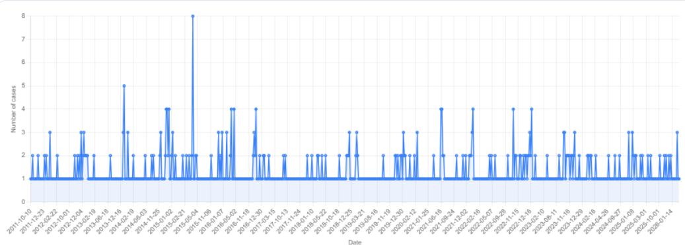
Year:2015
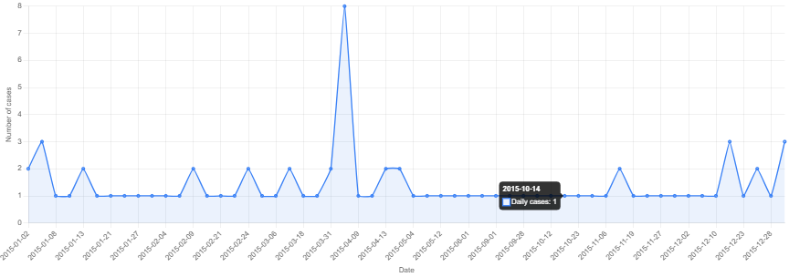
Age group:0
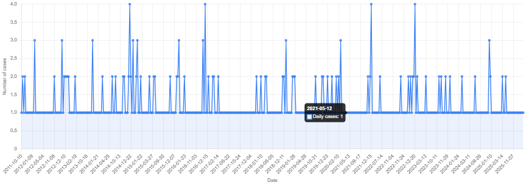
Data of woman
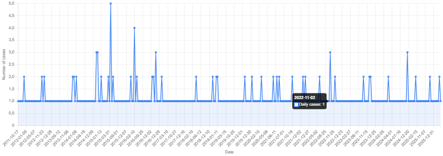
Data of men
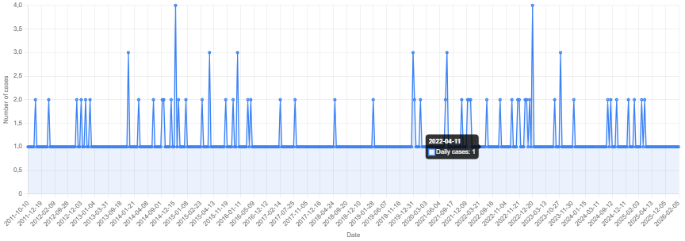
Covid-19
All
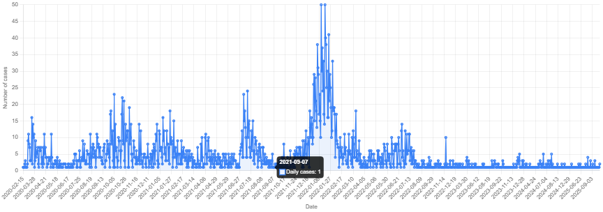
Year:2022
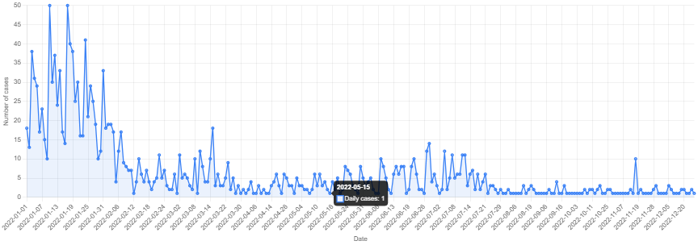
Age group: 45 to 49
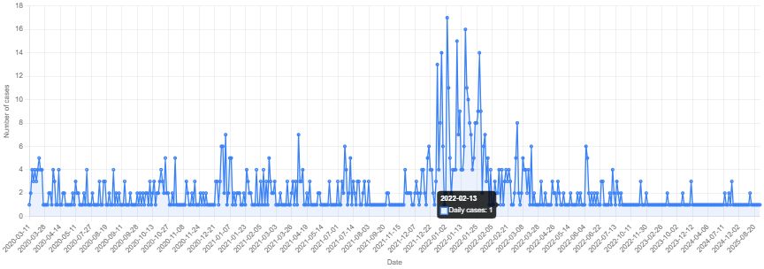
Data of woman
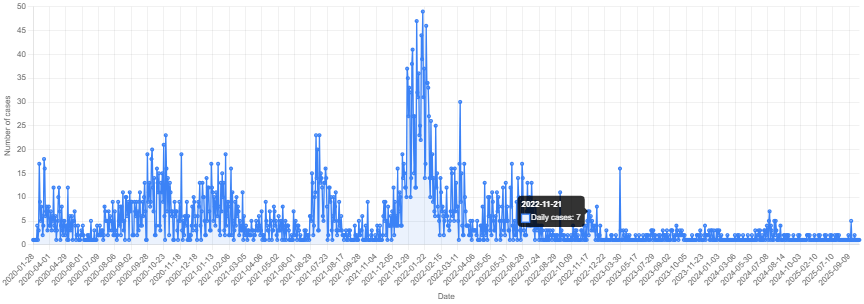
Data of men
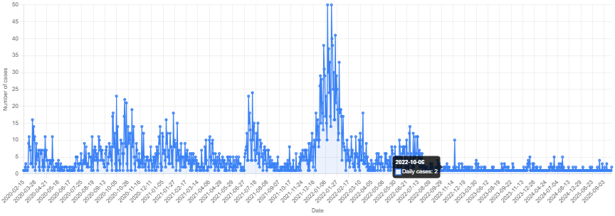
Flu
All
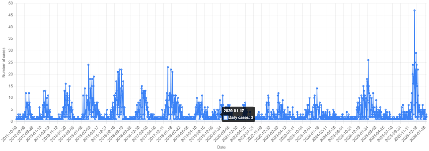
Year:2025
Age group:35 to 39
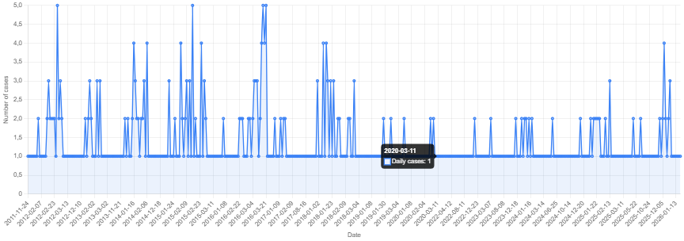
Data of woman
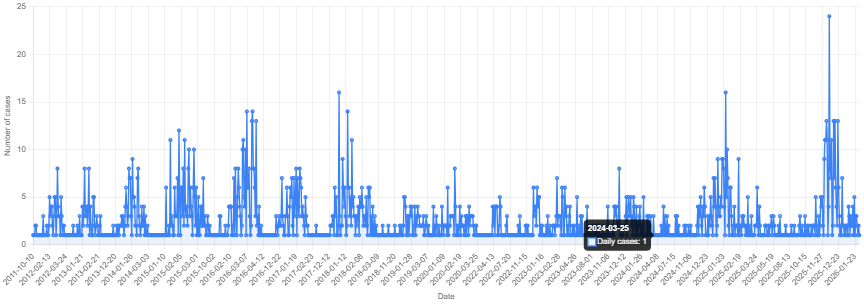
Data of men
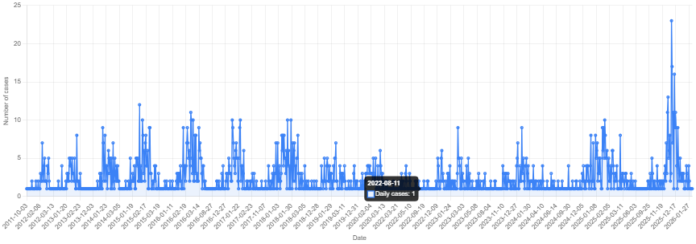
Respiratory infections like bronchiolitis, COVID-19, and the flu show clear patterns over time. Bronchiolitis mostly affects infants and peaks in winter, while COVID-19 and the flu affect all ages, with more cases at certain times of the year. Some age groups get sick more often: adults 45–49 had the most COVID-19 cases, and adults 35–39 had the most flu cases. Men sometimes have slightly more cases than women, but overall the trends are similar. Weather conditions, like wind, pressure, and sunlight, can affect how pollution spreads, which can influence respiratory infections. Overall, infections rise and fall in predictable ways, and understanding these patterns helps us know who is most at risk and when.